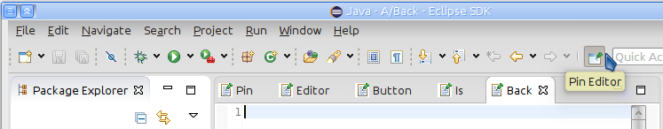
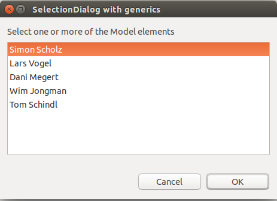
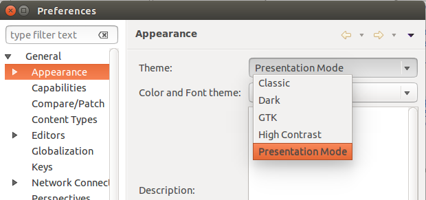
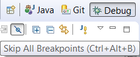
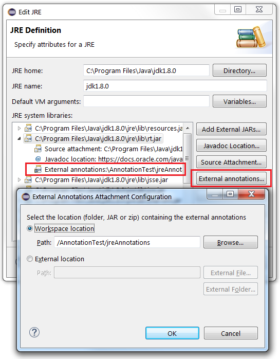
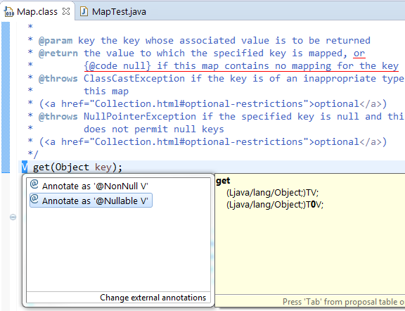

Use the XHTML Markup Validation Service.
CAUTION: Current Mac users can not use "update" to Mars M6. In fact, for M6, doing so will break your installation. You need to start with a fresh download. In the event that you updated before reading this, and have ended up with a broken installation, see Issues related to Mac App installations for the steps to recover your installation, after getting a fresh download.
Part tabs have now browser-like "Close Tabs to the Left" and "Close Tabs to the Right" menu.

For more information see bug 337588.
The context menu of the current perspective (right click on the current perspective button) has now a Customize... menu entry as a shortcut for the Window -> Perspective -> Customize Perspective menu.

For more information see bug 380233.
The print button on the main toolbar is now hidden by default.
The button can be added back to the toolbar with Customize Perspective dialog. To open this dialog right click on the current perspective button and select Customize... menu.
In the Customize Perspective dialog, in the first Tool Bar Visibility tab, expand the "File" entry, check "Print" entry and select the "OK" button.

For more information see bug 180308.
The Pin Editor button on the main toolbar is now shown if the option "General -> Editors -> Close editors automatically" is selected in preferences.
Once enabled, the button can be now also hidden via Customize Perspective dialog. To open this dialog right click on the current perspective button and select Customize... menu.
In the Customize Perspective dialog, in the first Tool Bar Visibility tab, expand the "Navigate" entry, uncheck "Pin Editor" entry.

For more information see bug 445538.
"Most recently used order for tab placement" (MRU) behavior is now decoupled from selected CSS theme by default.
Since Eclipse 4.2 the editors tab placement order was controlled by the selected CSS theme only, and there was no possibility to change this (except by 3rd party tooling). Now users and Eclipse product owners can define whether the CSS themes or user preferences are controlling the MRU behavior.
By default, the MRU tab placement behavior is now controlled by users, is disabled by default and can be switched on under Window -> Preferences -> General -> Appearance.

Plugin developers and Eclipse product owners can change now via preferences whether CSS theme or user preferences, and which default value MRU behavior should have. The preferences are for "org.eclipse.e4.ui.workbench.renderers.swt" plug-in and the keys are:
- "MRUControlledByCSS" (default is "false"),
- "enableMRUDefault" (default is "false"),
- "enableMRU" (default is "false").
For more information see bug 388476 comment 120.
In case CSS theming is switched off by using "-cssTheme none" command line argument, the "Window -> Preferences -> General -> Appearance" preference page still allows to change CSS independent preferences.

For more information see bug 388476 comment 127.
Previously, if editors were opened in the past Eclipse session, and their project was closed or deleted, an error part was shown if user was trying to switch to such an editor.

With this change the Eclipse IDE now automatically closes all affected editors if their project is closed or deleted, independently if editors were opened in the current or in the past Eclipse session.
For more information see bug 41431.
The AbstractSelectionDialog is an enhanced version of the existing SelectionDialog and is now located in the org.eclipse.jface plug-in instead of the eclipse.ui plug-in, which is not available for Eclipse 4 RCP applications.
It now supports generics and uses lists instead of plain arrays. You may set the selection via Varargs or a Collection.
The GenericSelectionDialog is a sample implementation of the AbstractSelectionDialog, which can be seen by running the Snippet070GenericSelectionDialog sample.

The CSS engine supports the usage of the COLOR-TRANSPARENT property which was introduced in Eclipse 4.5 M5 via the SWT.COLOR-TRANSPARENT property. This allowed to simplify the dark theme significantly.
For more information see bug 459961 and bug 431845.
A new "Presentation" theme is available in the preferences under General -> Appearance. The presentation mode increases the font size of text editors to 16px, so that code or other contents is better readable during presentations. Presenters using Eclipse for demos or during conference sessions do not have to search in the Colors and Font setting for the correct font to set.

For more information see bug 459961 and bug 459578.
The current default heap max (512MB) was increased to 1024MB.
For more information see bug 457489 .
The dark theme in Eclipse uses the new SWT API to set the background of a button under Linux.

For more information see bug 462009.
The WorkbenchPart class has been changed to return the requested type from its getAdapter(Class<T> adapter) method.
public <T> T getAdapter(Class <T> adapter);
For more information see bug 461766.
Added two new constructors in the Image class.
Image(Device, ImageDataProvider) and
Image(Device, ImageFileNameProvider)
Added two new interfaces to be used in the constructors.
ImageDataProvider with method
ImageData getImageData(int zoom)
ImageFileNameProvider with method
String getImagePath(int zoom)
To enable the rendering of differently sized images which are selected based on DPI on a high DPI
monitor, the client code needs to implement one of the above interfaces and construct the Image
object using the corresponding constructor.
Added a new API Browser.evaluate(String script, boolean trusted) which allows the client to run the Javascript code in Chrome security context or normal security context for SWT.MOZILLA
style browsers.

Tool tip shows the shortcut information.
Previously, annotation-based null analysis was significantly limited by the fact that many 3rd party libraries have no null annotations in their API. This implied that any errors caused at this interface could not be detected by the analysis, and even worse, implementors of library-defined interfaces could not use any intended contracts, because any null annotations in overriding methods were flagged as incompatible with the super version.
JDT now supports the concept of "external annotations". A user can specify null annotations in separate files and attach these to a given library. The compiler will take external null annotations into consideration for its null analysis.
Configuration:

External annotations can be provided as a directory tree of individual text files or as a zip file. External annotations can be attached to a JRE (per workspace) and to arbitrary libraries (per project).
- See below for creating external annotations using a new command "Annotate"
- See the wiki for the full story.
Two pre-requisites must be met for using this command:
- The project is configured to use annotation-based null analysis.
- An existing workspace folder has been specified as the external annotation location for a given library.
Users may select any type in the signature of a library method or field, and invoke "Annotate" -
either using the context menu, or by pressing Ctrl-1.
Proposals will be offered for marking the selected type as @NonNull or @Nullable.
All method parameters, return types and field types can be annotated.
Additionally when Java 8 is used, details like type arguments and type bounds etc. can be annotated.

After selecting a proposal, the compiler will immediately leverage the new annotation for its null analysis.

The IAdaptable interface has been changed to return the requested type from its getAdapter(Class<T> adapter) method.
public <T> T getAdapter(Class <T> adapter);
For more information see bug 442021.